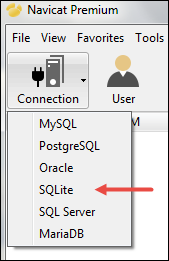

Creating Django Project
Last updated on July 27, 2020
To create a new Django project enter the following command inside your virtual environment.
1 2 | (env) C:\Users\Q\TGDB>django-admin startproject django_project
(env) C:\Users\Q\TGDB>
|
This command will create a new directory named django_project inside TGDB directory. The django_project directory is also known as Django Project Root Directory or simply Project Root Directory. Within this newly created directory, you should see two items.
- A directory with the same name as your project root directory i.e
django_project. - A Python script called
manage.py.
The directory django_project (i.e TGDB/django_project/django_project) is called Project Configuration directory within this directory you will the find the following four python files.
__init__.py- A special empty file that tells Python that the current directory should be treated as a Python package.settings.py- This file contains all the settings and configuration of this Django project.urls.py- A Python script to store the URL patterns of the Django project.wsgi.py- A Python script to run development server and also deploy the project to the production environment.
manage.py - This file inside provides a list of commands which you can use to interact or maintain your Django project. We will be using manage.py many times throughout this tutorial. One commonly used command provided by manage.py is to run Django built-in development server. Let's see how it's done.
First, change your current working directory to project root directory i.e TGDB/django_project (where manage.py is located) using the cd command.
1 2 3 | (env) C:\Users\Q\TGDB>cd django_project
(env) C:\Users\Q\TGDB\django_project>
|
To run Django development server issue the following command.
1 2 3 4 5 6 7 8 9 10 11 12 | (env) C:\Users\Q\TGDB\django_project>python manage.py runserver
Performing system checks...
System check identified no issues (0 silenced).
You have 13 unapplied migration(s). Your project may not work properly until you
apply the migrations for app(s): admin, auth, contenttypes, sessions.
Run 'python manage.py migrate' to apply them.
January 22, 2017 - 20:23:48
Django version 1.10.5, using settings 'django_project.settings'
Starting development server at http://127.0.0.1:8000/
Quit the server with CTRL-BREAK.
|
There are few things to notice here. First the line:
System check identified no issues (0 silenced).
Indicates that no errors were found in your Django project. If there had been errors then python manage.py runserver would have failed to start the server. The second important thing to note here is the following line:
1 2 | You have 13 unapplied migration(s). Your project may not work properly until you apply the migrations for app(s): admin, auth, contenttypes, sessions.
Run 'python manage.py migrate' to apply them.
|
This line tells us there are some unapplied migrations. In Django, we use migrations to create/update/delete/ tables or columns in the database. Don't worry too much about what migrations are, we will discuss them in depth in later chapters.
The third and the most important thing, for now, is the address of the Django development server i.e http://127.0.0.1:8000/. Open your favorite browser and visit http://127.0.0.1:8000/. You should see a page like this:
It means everything is working as expected.
To stop the development server hit CTRL+C. By default manage.py always starts the development server at port 8000 but you can change it to some other port using the following command.
python manage.py runserver <port>
For example, python manage.py runserver 3000 will start the Django development at port 3000. In case you want to open port at a specific IP address, you can easily do that using the following command:
python manage.py runserver <ip-address>:<port>
For example, to run Django development server at localhost on port 4444 issue the following command.
python manage.py runserver 127.0.0.1:4444
After every modification to Python code, Django development server automatically reloads itself. So you don't need to restart the server every time for the changes to take effect. However, there are some actions like adding files don't trigger a restart. In such cases, you will have to restart the server manually.
Setting up a Database #
Django can be used with almost all popular databases like MySQL, Oracle, PostgreSQL (which is the preferred choice among Django developers), SQLite etc. As this is a beginner tutorial, we will use SQLite database. But why SQLite? Because there are no additional steps involved to install and configure SQLite database. Django already comes bundled with SQLite database. So you don't have to configure anything to use it.
Django will automatically create an SQLite database named db.sqlite3 in the project root directory ( i.e TGDB/django_project), the first time you execute the runserver command. We have already executed the runserver command once, so at this point, you should have SQLite database file named
db.sqlite3 in your project root directory.
Django application #
In Django, project, and application means different things. According to Django nomenclature - a Django project is a collection of configurations and applications, these configurations and application together make up the whole web application or simply a web application or website. In other words, a project is a complete web application and an app is just one feature. For example, an app may be a blog, a comment system, a forum, a chatbox or even a contact form. All of these small apps and configurations together constitute a Django project.
Django Built-in Application #
Django already comes bundled with several built-in apps. To view these applications open settings.py file located in Project configuration directory i.e TGDB/django_project/django_project. We use
settings.py file to modify various settings of our Django project. For example, you can change the default timezone from UTC to your local timezone by specifying a new value to TIME_ZONE variable as follows:
TIME_ZONE = 'Asia/Istanbul'
This will change the default timezone to Asia/Istanbul. To view a full list of values you can specify click here.
To view all the built-in apps installed by default, take a look at the INSTALLED_APPS variable at the top of the settings.py file.
1 2 3 4 5 6 7 8 | INSTALLED_APPS = [
'django.contrib.admin',
'django.contrib.auth',
'django.contrib.contenttypes',
'django.contrib.sessions',
'django.contrib.messages',
'django.contrib.staticfiles',
]
|
As you can see there are 6 apps installed by default, all of which ships with Django. Here is a rundown of each application.
django.contrib.admin– An admin site.django.contrib.auth– An authentication system.django.contrib.contenttypes– A framework for content types.django.contrib.sessions– A session framework.django.contrib.messages– A messaging framework.django.contrib.staticfiles– A framework for managing static files.
Some of these apps require database table while others don't. Recall that when we tried to run Django development server we got the following warning.
1 2 | You have 13 unapplied migration(s). Your project may not work properly until you apply the migrations for app(s): admin, auth, contenttypes, sessions.
Run 'python manage.py migrate' to apply them.
|
This warning tells us about "unapplied migrations". Unapplied migration means that there are some changes need to be committed so that all the applications can run successfully. Before we use these apps, we have to create necessary tables in the database. To create tables we use the migrate command.
In the terminal or command prompt enter the following command to create necessary tables.
(env) C:\Users\Q\TGDB\django_project>python manage.py migrate
The output should look something like this:
1 2 3 4 5 6 7 8 9 10 11 12 13 14 15 16 17 18 19 | (env) C:\Users\Q\TGDB\django_project>python manage.py migrate
Operations to perform:
Apply all migrations: admin, auth, contenttypes, sessions
Running migrations:
Applying contenttypes.0001_initial... OK
Applying auth.0001_initial... OK
Applying admin.0001_initial... OK
Applying admin.0002_logentry_remove_auto_add... OK
Applying contenttypes.0002_remove_content_type_name... OK
Applying auth.0002_alter_permission_name_max_length... OK
Applying auth.0003_alter_user_email_max_length... OK
Applying auth.0004_alter_user_username_opts... OK
Applying auth.0005_alter_user_last_login_null... OK
Applying auth.0006_require_contenttypes_0002... OK
Applying auth.0007_alter_validators_add_error_messages... OK
Applying auth.0008_alter_user_username_max_length... OK
Applying sessions.0001_initial... OK
(env) C:\Users\Q\TGDB\django_project>
|
Don't worry! at this point, we are not expecting to you understand migrations completely. We will learn about them in detail in lesson Migrations in Django. For now, just remember this - In Django, we use migrations to create/alter/delete tables in the database. We will examine the tables created by the migrate command in the next section.
Run the development server again using the runserver command this time you won't see any warnings about unapplied migrations.
1 2 3 4 5 6 7 8 | (env) C:\Users\Q\TGDB\django_project>python manage.py runserver
Performing system checks...
System check identified no issues (0 silenced).
January 23, 2017 - 13:28:22
Django version 1.10.5, using settings 'django_project.settings'
Starting development server at http://127.0.0.1:8000/
Quit the server with CTRL-BREAK.
|
It is not necessary to use all apps provided by Django. If you don't want to use any particular app just remove it from the list. Let's say for some reason you don't want to use django.contrib.staticfiles app, after removing django.contrib.staticfiles, INSTALLED_APPS should look like this:
1 2 3 4 5 6 7 | INSTALLED_APPS = [
'django.contrib.admin',
'django.contrib.auth',
'django.contrib.contenttypes',
'django.contrib.sessions',
'django.contrib.messages',
]
|
But for now we need everything, so add django.contrib.staticfiles back to the INSTALLED_APPS list. Finally INSTALLED_APPS should look like this:
1 2 3 4 5 6 7 8 | INSTALLED_APPS = [
'django.contrib.admin',
'django.contrib.auth',
'django.contrib.contenttypes',
'django.contrib.sessions',
'django.contrib.messages',
'django.contrib.staticfiles',
]
|
Viewing the Database #
In this tutorial, we will use a Graphical Database Management program like Navicat Premium to view the current state of our SQLite database from time to time. Programs like Navicat Premium makes it really easy to view tables, create/alter records graphically without writing a single line of SQL.
However, if you are SQL guru and know SQL commands by heart, you are free to open db.sqlite3 file from the command prompt or terminal and proceed from there.
Navicat Premium is not a freeware. However, they do offer 30 day trial period. There are many other freeware like Db Viewer, DBeaver etc which allows you to do more or less same things. Throughout this tutorial, I will be using Navicat Premium. The following are instructions to open an SQLite database using Navicat Premium, instructions for other programs are more or less same.
Start Navicat Premium and select Connection > SQLite.

A new window will open. Specify the connection name, select "Existing Database File" and browse the location where db.sqlite3 file is located. An SQLite database doesn't require username and password, so skip User Name and Password fields. At last, click "Test Connection" button at the bottom left corner. If the connection succeeds, close the dialog box and save the connection by clicking the OK button. In case you encountered any error check the location of the SQLite database file and try again.
To open the SQLite database double click on the name of the connection on the left pane, double click main again and you should see a window something like this:
As you can see, currently there are 11 tables in my SQLite database.
Creating Django application #
To create a new app, first, make sure your current working directory is same as where manage.py file is located. After that execute the following command.
1 2 | (env) C:\Users\Q\TGDB\django_project>python manage.py startapp blog
(env) C:\Users\Q\TGDB\django_project>
|
This command will create a new directory named blog inside project root directory ( TGDB/django_project ). The contents of the directory should look like this:
Here is a rundown of each file and folder:
blog/migrations/
blog/migrations/__init__.py- The__init__.pyfile is just the Python way of saying, treat this (migrations) directory as a package.blog/migrations- This directory will store all our migration files. In other words, it will store all the changes made by us on the database. Don't worry too much about it right now, we will get back to it later.
blog/
blog/__init__.py- The__init__.pyfile is just the Python way of saying treat this (blog) directory as a package.blog/admin.py- This file contains all the configurations necessary to connect our blog app to the admin app supplied by Django. We will learn in detail how to do so in lesson Django Admin App.blog/apps.py- This file contains application specific configurations.blog/models.py- This file contains our application models. In other words, this is the place where we will define tables and relationships between them.blog/test.py- This file contains functions to unit test our app.blog/views.py- This file contains view functions which handle requests and return responses.
We have created a new app called blog, now we must inform our Django project about the existence of the blog app. To do this open settings.py located in TGDB/django_project/django_project and append 'blog' at the end of the INSTALLED_APPS list as follows:
1 2 3 4 5 6 7 8 9 | INSTALLED_APPS = [
'django.contrib.admin',
'django.contrib.auth',
'django.contrib.contenttypes',
'django.contrib.sessions',
'django.contrib.messages',
'django.contrib.staticfiles',
'blog',
]
|
To verify whether Django picked up our new blog application restart the server. If you can successfully start the server without any errors then it means you are ready for the next step.
Note: To checkout this version of the repository type git checkout 3a.
Load Comments